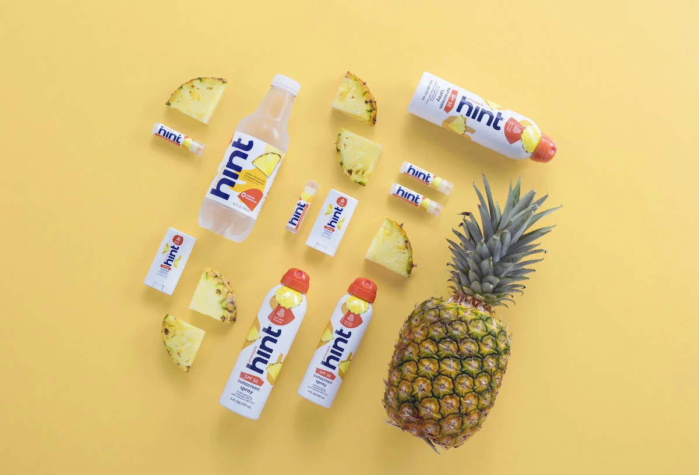
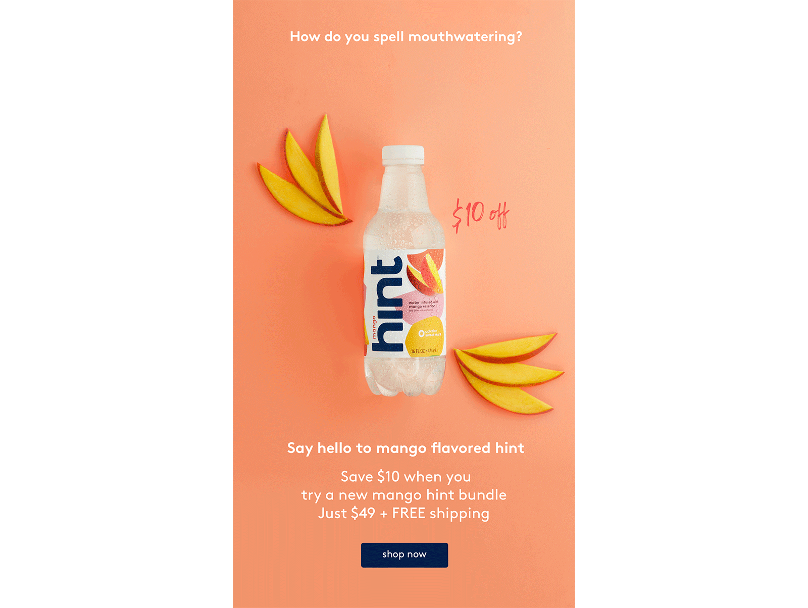
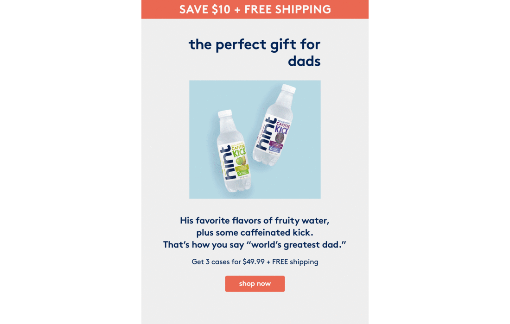
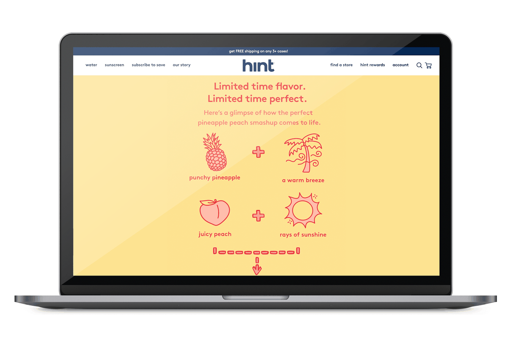

Hint · 2019–2021 · Lead Copywriter
Led brand copy and strategy for Hint, a DTC flavored water company, across every channel the brand spoke through. Ran the promotional campaign behind Hint’s 2020 Super Bowl commercial and the launch of the CEO’s NYT bestselling book.

Water isn’t exactly exciting, and Hint’s pitch is subtle: fruit-flavored water with no sweeteners and no calories. This was a difficult story to make people care about in a crowded DTC market where every brand is shouting.
Give water a personality that will make customers remember us in the supermarket, corner store, or online.
I was the lead copywriter, working with the creative director and design team. The work spanned across:
Email, website, paid and organic social, e-retail, affiliate, and product descriptions, all in one consistent voice.
Led the promotional campaign around Hint’s 2020 Super Bowl commercial, turning one 30-second spot into weeks of brand attention.
Led brand copy for the release of the founder’s book, which became a New York Times bestseller.
Used performance insights to continuously sharpen the creative, so the voice stayed fun and kept converting.
Sample 1
Turning a mango flavor drop and a Father’s Day gifting moment into emails worth opening.


Sample 2
Playful pairings and hand-drawn illustration brought a pineapple peach smashup to life online.

Hint taught me the balancing act of building a lifestyle brand in a DTC world. The short-term levers were easy to pull but a lifestyle brand isn’t built on “40% off”. I was proud to champion the voice and feel that led to loyalty, retention and a brand that people remember.